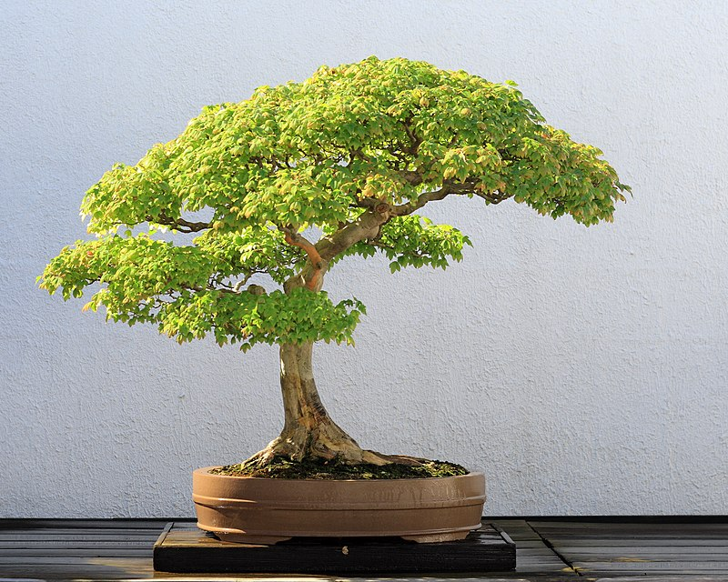

Бонсай
Бонса́й— мистецтво вирощування карликових дерев y невеликих посудинах. Не кожне деревце в низькому контейнері — бонсай, японські традиціоналісти обмежують список видами: сосна, ялина, ялівець, клен, азалія, рододендрон.
Авторство ідеї бонсай належить Китаю. Існують різні думки з приводу дати започаткування цього мистецтва, за різними твердженнями початок своєї історії воно отримало близько 4000 років тому.

Існує легенда що першим «бонсаїстом» був китайський імператор династії Хань, який створив мініатюрну копію своєї імперії. Згідно з легендою там були мініатюрні гори, дерева, будинки й навіть річки. Згодом, у період середньовіччя, разом із буддизмом культура бонсай поширилася й у Японію де вкорінилося спочатку серед аристократів і духовенства, а потім, на початку 17 століття, і на національному рівні. У 18 столітті в Японії почали впроваджувати особливі техніки формування дерев, правила, норми, відділяти різноманітні стилі, а також проводити виставки на яких майстри ділилися своїми досягненнями. Найстарішою дієвою виставкою Японії є виставка бонсай у Токіо, яка вперше відбулась ще у 1914 році й кожен рік радує людей своїми неймовірними експонатами вже понад сто років поспіль.
У 20 столітті, багатовікові традиції бонсай потрапили й на інші континенти. Перша виставка бонсай у Європі відбулася 1909 році в Лондоні. Як не дивно, але спочатку європейці досить погано ставилися до нового для себе мистецтва, вони вважали що це знущання з дерев. Проте після другої світової війни бонсай починає здобувати популярність на Заході. Багато дерев було привезено солдатами з Японії. Виникла потреба у спеціалізованій літературі про бонсай.
Останнім часом популярність цього мистецтва неймовірно виросла. Дерева бонсай з'явились у магазинах, садових центрах, проте здебільшого це псевдобонсай — пеньки в'язів, дзелькви, фікуса чи кармони які обросли декількома гілочками. Знайти бонсай справжнього майстра майже нереально у магазині. На даний час існує велика кількість клубів бонсай майже у кожній країні світу.